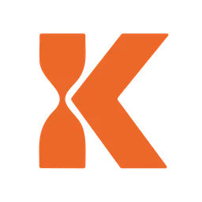

Horas liberadas / año
0
0 h/semana · 48 sem laborables

Activa las métricas que cuentan la historia de este Activo en este cliente. No marques las que no apliquen.
Núcleo
Operativas
Estratégicas
Filosofía Kairos
Constantes: 48 semanas laborables/año · 1 FTE = 1.760 h/año.
Operativas
Estratégicas
Filosofía Kairos
Los inputs por métrica aparecen al activar la métrica correspondiente arriba. El campo €/h aparece al activar el cálculo en €.
Núcleo
Horas liberadas / año
0
0 h/semana · 48 sem laborables
Capacidad neta liberada
0 €
horas × €/h − coste de uso anual
Coste de uso del Activo
0 €
€/año en herramientas + mantenimiento
Valor compuesto del Activo
12 meses
0 h
0 €
24 meses
0 h
0 €
36 meses
0 h
0 €
Aceleración de procesos
Reducción del lead time
0
% más rápido extremo a extremo
Reducción de errores
Horas / año recuperadas de retrabajo
0
parte del total atribuible a errores
Eliminación de duplicidades
Horas / año duplicadas eliminadas
0
trabajo que ahora se hace una sola vez
Capacidad sin contratar
FTE equivalente liberado
0
personas-año (1 FTE = 1.760 h)
Capacidad equivalente en €
0 €
coste FTE × FTE liberado
Factor bus
Δ Personas críticas
0
menos dependencia (negativo = mejor)
Velocidad de acción
Aceleración decisión → ejecución
0
% más rápido en pasar de decidir a hacer
Densidad Kairós
Tiempo en alto valor (Kairós)
0
horas/año dedicadas a lo que mueve el negocio · 0% del tiempo liberado
Momentum
Aceleración del aprendizaje
0×
veces más rápido aprende el equipo
Δ Ciclos por trimestre
0
iteraciones probar → aprender → ajustar
Autonomía del Activo
Know-how en el sistema
0%
documentado, no en cabezas
Capacidad de escalar
1×
volumen soportable sin sumar personas
Score de autonomía
0
% conocimiento × factor escala (valor intrínseco)
¿Listo para llevarlo a propuesta?